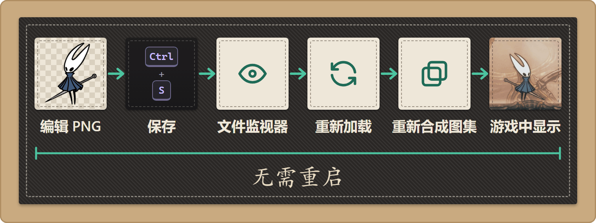

A4 Stitchwork 工作原理
适用于 Stitchwork 0.9.0 · 更新于: 2026-10-19
创作者路线 · 从小处着手
比起安装资源包，制作资源包需要更多的阅读和测试。
先读完这篇简短的入门，再挑一种资源类型完成你的第一次修改。
替换发生在资源加载时
Stitchwork 永远不会修改游戏的资源文件。它会在游戏请求加载某个资源时拦截这次请求，并用你的文件反馈给游戏，而不是原版资源。关闭资源包后，游戏就会重新加载原版资源。拦截请求，替换反馈结果。 这就是 Stitchwork 最核心的替换资源机制，因此你永远不需要重新打包游戏文件，也不会影响你的存档。
底层实现方法（可选阅读）
Stitchwork 使用 Harmony Hook 拦截游戏的资源访问，例如 Sprite 设置、Language.Get 文本读取以及音频播放等。当游戏请求一个已被替换的资源时，Hook 会将其替换为你的版本。Stitchwork 永远不会修改游戏的资源文件，所有替换都只在运行时生效。
你的工作文件
Stitchwork 把你的工作成果单独存放，而不是放在模组文件夹里。游戏文件夹里的 Stitchwork/ 存放你正在修改的工作区文件，Packs/ 存放你安装的资源包。模组管理器更新时，永远不会碰到这两个文件夹。顺着下面这条丝线移动，看看 Stitchwork 的文件夹是怎么一个个出现的；点开其中任意一个，就能看到里面放的是什么。
文件
手动安装
Cogfly 管理器档案
Customizer 皮肤
刚装好
刚装好：只有你自己复制进去的文件。顺着这根丝线往后移，看看 Stitchwork 会添加些什么。
首次启动
首次启动：Stitchwork 会建好你的工作区文件夹、全局资源包文件夹和它自己的设置。
使用各项功能
使用各项功能：用到某些工具时，会多出它们需要的文件夹。
Stitchwork 已添加 {n} 项
还没有添加任何东西
选一个文件夹或文件，看看它是做什么用的。带补丁的文件夹是 Stitchwork 自带的。
参见：
由 Stitchwork 添加
Stitchwork 自带
游戏、BepInEx 或你的模组管理器
Customizer
已找到
未找到
首次启动时由 Stitchwork 添加
用到时由 Stitchwork 添加
Stitchwork 自带
由你的模组管理器管理
属于游戏本体
BepInEx
由你自己安装
Customizer · 原地读取，从不改动
所有管理器档案共用
仅限当前管理器档案
Stitchwork 会在里面加一行
游戏
BepInEx
Cogfly
自带
Stitchwork
你的
Customizer
共享
当前配置
已找到
未找到
你的游戏文件夹，也就是 Steam 或其他商店安装丝之歌的位置。Stitchwork 把自己的文件夹放在这里，挨着游戏本体，模组管理器的更新永远碰不到它们。
一个 Cogfly 管理器档案。BepInEx 和你添加的所有模组都装在这里，所以每个管理器档案都相当于一份单独装好模组的游戏。
模组加载器。Stitchwork 作为 BepInEx 插件运行。
插件都放在这里。Stitchwork 也会在这里找资源包：只要文件夹里有一个 Stitchwork/（或 Patchwork/）文件夹，就算一个资源包。
所有插件的设置都在这里。
你把 Stitchwork 复制进去的那个文件夹。这几个文件要放在一起，你自己的作品别往这里放。文件夹名只是个建议：DLL 放在哪儿，Stitchwork 都能找到自己。旧版本会把你的文件存在这里；“总览 › 立即迁移”会把它们复制到工作区文件夹。
A1 · 内容介绍
Cogfly 从 Thunderstore 安装 Stitchwork 的位置。每次更新时 Cogfly 都会整个替换这个文件夹，所以 Stitchwork 不会在这里存放任何属于你的东西。
Thunderstore 的包信息卡：名称、版本和依赖项。
包在 Thunderstore 上显示的图标。
包在 Thunderstore 上显示的说明。
每个版本的更新内容。
Stitchwork 本体。
Stitchwork 需要用到的着色器。一定要和同一个版本的 DLL 一起安装。
Stitchwork 自己的界面语言：管的是这个模组的菜单和按钮，不是你资源包里的文本。
许可证。旁边的 LICENSES/ 里是第三方声明。
Stitchwork 所用组件的许可证，比如 Tabler 图标。
Stitchwork 的设置文件。“设置”（按 0 键）会替你写好它。
热键与设置
你的资源包设置：资源包的顺序、开了哪些、各自的条件，还有保存过的配置方案。这些都存在 BepInEx 的 config 里，所以每个管理器档案都有自己的一套。
A3 · 资源包管理器
一个小缓存，记着每个资源包的文件数量，好让资源包管理器打开得快一些。它会自己重建。
资源包的排序和开关状态，从最上面的开始记。
在资源包管理器里点“应用”后出现。
你给资源包设的条件：场景、纹章、另一个资源包，等等。
在资源包管理器里点“应用”后出现。
你起了名字保存下来的资源包配置方案，一键就能来回切换。
保存一个资源包配置方案后出现。
游戏的数据文件夹。
Unity 的启动设置。Stitchwork 会在里面加一行，开启增量垃圾回收，让画面更流畅。设置 AutoEnableIncrementalGC = false 再启动一次游戏，这一行就没了。
Stitchwork 改动之前的 boot.config 备份。
Silksong Customizer 存放皮肤的地方。
Customizer 的皮肤文件夹。Stitchwork 会把每个皮肤显示成一个资源包，直接在原位置读取，从不改动这些文件夹。
A2 · 安装资源包
一个 Customizer 皮肤。它会和你的 Stitchwork 资源包一起出现在资源包管理器里，用“转换”可以把它变成 Stitchwork 资源包。
Customizer 用来标记当前启用皮肤的文件。Stitchwork 也靠它来认出一个皮肤。
整图，每个精灵图集合一个文件夹，放在皮肤的根目录下。
Texture2D 整图：HUD、菜单和特效。
由你的模组管理器安装的 Customizer 皮肤。Stitchwork 靠它的 active.txt 认出它，并把它显示成资源包。
手动安装的资源包都放在这个文件夹里。不管用哪个管理器档案、用什么方式启动游戏，都能看到它，模组管理器更新也不会碰它。
A2 · 安装资源包
一个你安装的资源包。只有里面那个 Stitchwork/ 文件夹的名字必须一字不差。
资源包目录结构
Stitchwork 在每个资源包里找的就是这个文件夹。
可选，但建议附上：资源包卡片上的名称、作者、版本、简介和封面都来自它。Stitchwork 读的是这个文件，不是 manifest.json。没有它，就用文件夹名；新版本换了文件夹时，玩家的设置也会丢失。
发布你的资源包
单张精灵图：每一帧一个 PNG。
B7 · 精灵图路径速查
替换用的音效，按原版音频片段名匹配。
D1 · 音频
本地化文本，先按表、再按语言分开。
C1 · 文本与对话
Stitchwork 找不到这个资源包。它会在每个资源包里找一个 Stitchwork/ 文件夹，而这些文件放高了一层。在 CrystalHornet/ 里新建一个 Stitchwork/ 文件夹，把它们移进去。
由 Customizer 皮肤转换而来的 Stitchwork 资源包。它一开始是关闭的，什么时候让它接手由你决定。
对 Customizer 皮肤点“转换”后出现。
由你的模组管理器安装的资源包。它只属于当前管理器档案，每次更新都会被替换掉。
你的工作区文件夹。这里的文件不用打成资源包就会直接加载，所以制作和测试都在这里。你的修改、导出的原版资源和其他导出文件都会存到这里。所有启用的资源包优先级都比它高，只有文本和颜色规则例外，这两样以你的为准。
B1 · 开始制作资源包
你的精灵图，目录结构和资源包里的一样。“编辑”和“编译回”都会写到这里。
B7 · 精灵图路径速查
Texture2D 系统的精灵图：HUD、菜单、特效等等。
B4 · T2D 精灵图
一个精灵图集合，名字和游戏里的叫法一样。大黄蜂的集合叫 Knight。
编辑一张精灵图后出现。
贴布绣：只给某一段动画片段用的美术，哪怕其他片段也共用同一张精灵图。
给某段动画片段单独配上美术后出现。
BEx1 · 帧复用：一图多动画
铺在一张画布上的整段动画，可以直接开画。Stitchwork 从不加载它；“编译回”会把你画好的帧写回去。
在画布上打开一段动画片段后出现。
B6 · 动画画布
整图，适合你手上本来就是一整张大图的美术。
B3 · 移植既有作品
替换用的音效，按游戏里的音频片段名匹配。
D1 · 音频
替换用的过场动画。
E1 · 视频
你改过的文本。文本编辑器会保存到这里，而且这里的文本优先于所有资源包。
C1 · 文本与对话
字体：每个语言槽位一个文件夹，另外 _fallback/ 用来补上游戏字体里缺的字。
C2 · 字体
你的颜色规则。“颜色”模式会替你写好，不用手动编辑。
B9 · 色彩
游戏自带的美术、文本和音效，导出来给你做参考。只当参考用，千万别拿去发布。
资源导出与全量导出
原版精灵图，目录结构和你的 Sprites/ 文件夹一样。
原版整图。
游戏的文本，按文本表和语言分开存放。
你从游戏里保存下来的音效。
在“音频”标签页点“导出 WAV”后出现。
你给 Stitchwork 界面做的翻译，会叠加在自带的语言之上。
在“文本 › 翻译”里翻译界面后出现。
拆成单张精灵图的整图。
在“实用工具”标签页转换整图后出现。
用你的动画片段做成的 GIF 动图。
点“导出 GIF”后出现。
Stitchwork 替你改动文件之前保留的原件，比如清理边缘时留下的。对结果满意后就可以删掉。
清理某个资源包的边缘后出现。
资源包体检的报告，每个资源包一份。
给资源包做过体检后出现。
来自“实用工具 › 探针”的性能捕获：“捕获堆内存”和“启用 GC 卡顿捕获”都会把报告存到这里。反馈卡顿问题时，可以附上一份。
在“实用工具 › 探针”里开始捕获后出现。
游戏到目前为止播放过的所有音效名，“音频”标签页靠它来列出这些音效。所有管理器档案共用这一份。
玩一阵子之后出现。
Stitchwork 添加的每一个文件夹，手动安装和 Cogfly 管理器档案两种情况都有。打开 Customizer 开关，可以看到 Customizer 皮肤放在哪里。
总览面板（按 2）会显示你的工作区文件夹。浏览…可以换到别的位置，立即迁移会把旧版本放在 DLL 旁边的文件搬过来。资源包内部的文件布局请看资源包目录结构。
要做图像修改？先来预览一下两种精灵图系统
完整的编辑工作流选择请参考 B0。
两种精灵图系统
这是最容易踩坑、也是最值得先了解的一件事：丝之歌的 2D 美术资源使用了两套不同的系统，而资源属于哪一套系统决定了它应该放在哪个文件夹。
- tk2d（2D Toolkit）——几乎所有带动画的角色，例如大黄蜂、敌人和 Boss，都使用 tk2d，并打包在共享图集中。对应文件应放在：
Sprites/[Collection]/[Material]/。 - Texture2D（“T2D”）——那个“问题儿童”，什么都要掺一脚：菜单、HUD、特效、技能图标以及部分过场动画画面。它甚至还会让其中一部分动起来，用的是 Unity 自带的 Animator，而不是 tk2d。对应文件应放在
Sprites/T2D/ 或 Spritesheets/T2D/。
不用刻意记住哪些资源使用哪个系统。开发中心的图形标签页（按 3）会直接告诉你：动画模式显示的是 tk2d；T2D 贴图和 T2D 日志模式显示的是 Texture2D。（它的第四个模式颜色里是颜色规则，详见色彩。）如果某个替换始终没有生效，第一件要检查的就是：它是不是属于另一套精灵图系统？
每个丝之歌皮肤创作者都会遇到的坑：游戏内部仍然把大黄蜂（Hornet）称作“Knight”，这是《空洞骑士》遗留下来的命名。所以名称以 Knight_… 开头的精灵图，实际上都是大黄蜂的资源。
更多术语说明请参阅：术语表。
热重载
热重载的意思是：你的改动会在游戏运行时直接生效。Stitchwork 在运行中的游戏里工作，所以你可以一边玩一边改。想看到改动，不用退出游戏、重新启动，也不用重新读档。
Stitchwork 会持续监视你的工作区文件夹和资源包文件夹。当你保存图片后，会自动触发重新加载，并重新合成到当前正在使用的图集。片刻之后就会生效：
编辑PNG → 保存 → 文件监视器检测到变化 → 重新加载 → 重新合成图集 → 游戏中显示（无需重启）

从保存 PNG 到显示在屏幕上，无需重启。
只有更新 Stitchwork 版本（新的 .dll 文件）时才需要重启游戏。更新资源包内容永远不需要重启。
当多个资源包修改同一个资源时
如果 多个资源包同时替换了同一个精灵图，则由资源包管理器中设置的优先级决定最终使用哪个版本。列表位置越高，优先级越高。资源包管理器也会明确显示：哪个资源包最终生效，以及哪个资源包被覆盖。有两个例外始终优先于资源包，这样可以确保你在游戏里做的修改不会被悄悄覆盖：一是工作区文件夹 Text/ 里的文本（文本标签页的编辑器就保存在这里），二是工作区文件夹 Recolor/ 里的颜色规则（颜色模式就保存在这里）。规则可能在1.0版本前还有所改动。完整规则请参阅：优先级与冲突。
你想改什么？
先做一个小小的编辑替换一个常见的素材，在游戏里确认生效，再慢慢扩大项目。具体的编辑步骤，对应的指南会一步步带你走完。等你准备好分享时，再看发布你的资源包；发布相关的细节到那时再管也不迟。